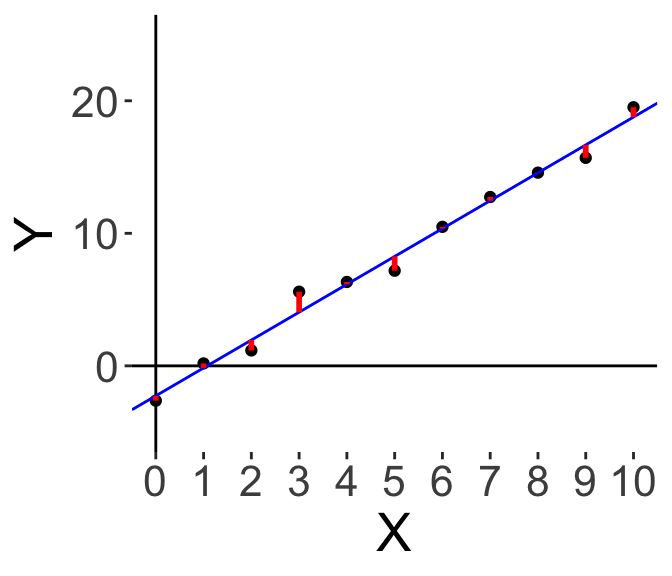

5.4 Ordinary Least Squares Regression
Let’s take a quick peek behind what the model is doing, and we’ll discuss the formulation of Ordinary Least Squares regression.
Let’s assume that the “true” model is such that \(Y\) is \(b_0\) + \(b_1\)*\(X\) plus some “errors”, which could be due to other, unmeasured factors, or maybe just random noise.
\[ \text{``True" model: } Y = b_0 + b_1 X + \epsilon \]
Within a linear regression, we are making the assumption that the errors are Normally distributed around zero with some variance. (So \(\epsilon \sim \mathscr{N}(0, \sigma)\)).
Since we don’t know the “true” \(b_0\) and \(b_1\), we can only choose \(\hat{b_0}\) and \(\hat{b_1}\); using this we can compute the prediction of our model, \(\hat{Y}\). We want our \(\hat{b_0}\) and \(\hat{b_1}\) to be as close to the “true” \(b_0\) and \(b_1\), which will also make our predictions \(\hat{Y}\) as close to the actual \(Y\).
To do this, we define the Residual or Residual Error of our model. For the \(i\)-th data point, the residual is the difference between the actual \(Y_i\) and our model predicted, \(\hat{Y_i}\).
\[ \text{Residual Error: } e_i = Y_i - \hat{Y_i} \]
Here’s an illustration. Let’s say I start off just by drawing a green line through the origin with some upward slope.

Here, the red lines illustrate the residual error; the difference between the actual value and our prediction. And to make our model better, we want to minimise the red bars. Some red bars are lower, some are higher, so let’s pivot the slope upwards.

Now, we have this yellow line. It looks better, overall the bars are smaller. Now we note that all the red bars are below, so instead of pivoting, let’s move the whole line down.

And finally we get the blue line here, which is the best solution to minimising the red bars. We want to minimise the residuals. How is this done?
5.4.1 Ordinary Least Squares Derivation
The residuals can be positive or negative, so if we simply add the residuals up we might be cancelling out some of them. So instead of minimising the sum of the residuals, we usually choose to square the residuals and minimise the sum of squares of the residuals. (Mathematically it becomes easier to work with the square than the absolute value).
So here, we have the Ordinary Least Squares Regression, where the goal is to choose \(\hat{b_0}\) and \(\hat{b_1}\) to minimise the sum of squares of the residuals \(\sum_{i} e_i^2 = \sum_i \left( Y_i - \hat{Y_i} \right)^2\).
We can do this by taking the partial derivative with respect to \(\hat{b_0}\) and \(\hat{b_1}\), and setting them both to 0. First, we define the following variables to simplify notation:
\[\begin{align} \text{Define } \bar{Y} &\equiv \frac{1}{n}\sum_i^n Y_i \\ \text{Define } \bar{X} &\equiv \frac{1}{n}\sum_i^n X_i \\ \text{Define } Z &\equiv \sum_i \left( Y_i - \hat{Y_i} \right)^2 \\ &= \left( Y_i - \hat{b_0} - \hat{b_1} X \right)^2 \\ \end{align}\]
Then we take the partial derivative with respect to \(\hat{b_0}\), solve for this \(\hat{b_0}\), then substitute it into the partial deriative with respect to \(\hat{b_1}\): \[\begin{align} \text{Partial deriative w.r.t. } \hat{b_0} : \; \; \frac{\partial Z}{\partial \hat{b_0}} &= \sum_i^n -2 \left(Y_i - \hat{b_0} - \hat{b_1}X_i \right) \\ \text{Setting the derivative to 0 and solving, we have: } \; \; \hat{b_0} &= \frac{1}{n}\sum_i^n Y_i - \frac{1}{n}\sum_i^n\hat{b_1}X_i \\ \implies \hat{b_0} &= \bar{Y} - \hat{b_1} \bar{X} \\ \text{Partial deriative w.r.t. } \hat{b_1} : \; \;\frac{\partial Z}{\partial \hat{b_1}} &= \sum_i^n -2X_i \left( Y_i - \hat{b_0} - \hat{b_1}X_i \right) \end{align}\] \[\begin{align} \text{Setting the derivative to 0 and substituting $\hat{b_1}$, we have: } & \\ \sum_i^n X_i Y_i - \sum_i^n (\bar{Y}-\hat{b_1}\bar{X})X_i - \sum_i^n\hat{b_1}X_i^2 &= 0 \\ \sum_i^n X_i Y_i - \bar{Y} \sum_i^n X_i + \hat{b_1} \left(\bar{X} \sum_i^n X_i - \sum_i^n X_i^2 \right) &= 0 \\ \hat{b_1} &= \frac{\sum_i^n X_i Y_i - \bar{Y}\sum_i^n X_i }{ \sum_i^n X_i^2 - \bar{X} \sum_i^n X_i } \\ &= \frac{\sum_i^n X_i Y_i - n\bar{X}\bar{Y}}{ \sum_i^n X_i^2 - n\bar{X}^2} \\ \text{simplifying: } \; \; \hat{b_1} &= \frac{\sum_i^n (X_i - \bar{X})(Y_i - \bar{Y})}{ \sum_i^n (X_i - \bar{X})^2 } \end{align}\]
And we end up with the final OLS solution:
\[\begin{align} \hat{b_0} &= \bar{Y} - \hat{b_1} \bar{X} \\ \hat{b_1} &= \frac{\sum_i^n (X_i - \bar{X})(Y_i - \bar{Y})}{ \sum_i^n (X_i - \bar{X})^2 } = \frac{Cov(X,Y)}{Var(X)} \end{align}\]
The good news is that \(R\) already does this for you. Let’s check this solution with the lm() model we fit on the previous page!
Let’s do \(\hat{b_1}\) first: in R, we can calculate the covariance of \(X\) and \(Y\), and divide that by the variance of \(X\), and save that into b1-hat: for this dataset we get 2.10.
## [1] 2.103757Following the equation for \(\hat{b_0}\), we can take the mean of \(Y\), and subtract \(\hat{b_1}\) times the mean of \(X\), and we get -2.26.
## [1] -2.261167Finally let’s go back to our regression output table, which we can summon using summary(...)$coeff.
## Estimate Std. Error t value Pr(>|t|)
## (Intercept) -2.261167 0.46170984 -4.897376 8.50721e-04
## x 2.103757 0.07804321 26.956313 6.44250e-10We can see that the Estimate of the Intercept, i.e., \(\hat{b_0}\), is -2.26, and the Estimate of the Coefficient on \(X\), i.e., \(\hat{b_1}\), is 2.10. They agree exactly! Excellent. So our lm() is really doing OLS regression.
Again, since \(R\) does all the calculations for you, it’s not necessary to know how to derive the OLS solutions (especially with more than 1 \(X\)), but it is handy to know the intuition behind it, especially when we get to more complicated regression.